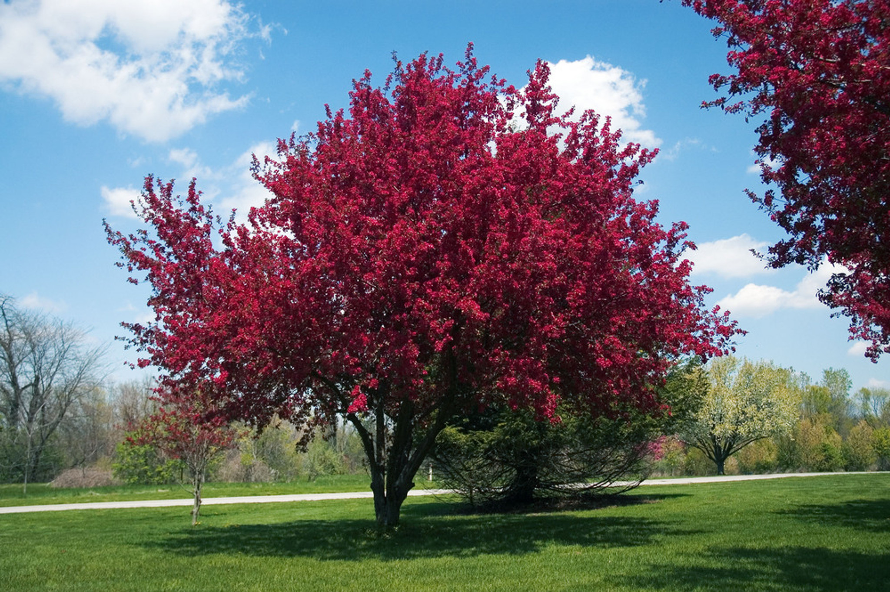

Nature is great. I would like to study agriculture in the near future, and work together with researchers studying differentials and such measurements out in nature. I would not mind harsh environments, I would just need my thinkpad and a broadband connection.
very neat databaseLab 4 Home